La delicada situación del club azulgrana.
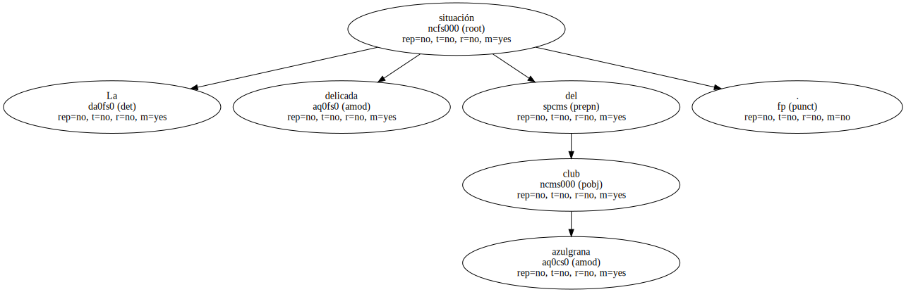El presidente del Barça cree que las lesiones han debilitado al equipo.
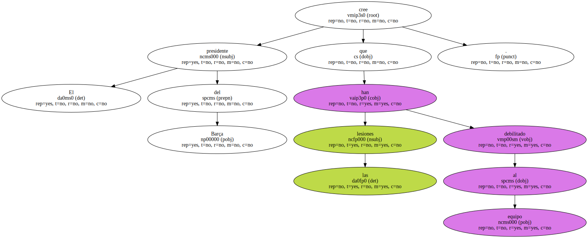El dirigente responsabiliza a la prensa del clima hostil hacia Louis van Gaal.
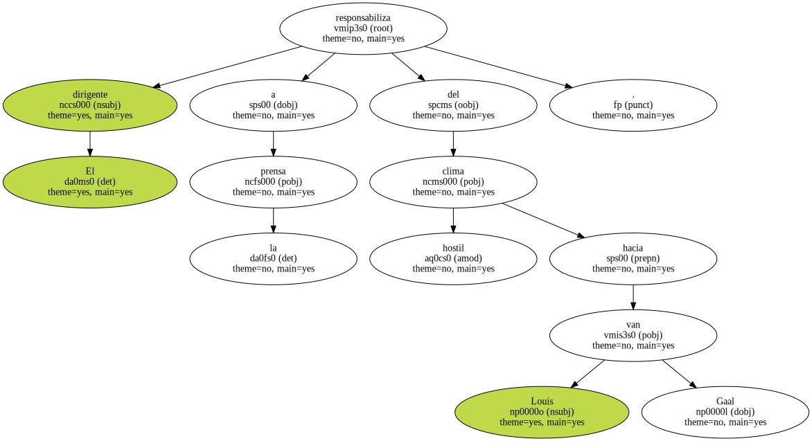" Estoy convencido de que todavía ganaremos la Liga " , dice el dirigente.
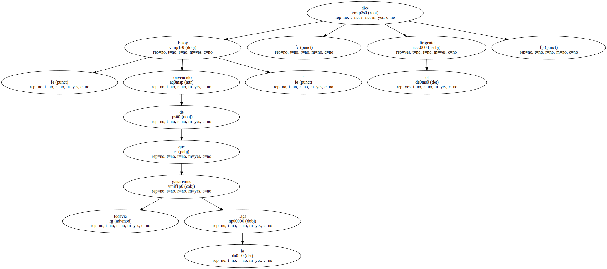El presidente del Barça , Josep Lluís Núñez , lanzó ayer un mensaje de serenidad a la afición , a la que pidió " calma y apoyo al equipo " , y se mostró dolido por el clamor popular que se produjo contra el técnico Louis van Gaal durante el partido del pasado sábado ante el Atlético de Madrid , justo en el día inaugural del centenario del club.

Núñez no rompió su silencio , ya que ha decidido no realizar declaraciones , pero conversó en Ginebra con EL PERIODICO , durante un descanso de la reunión que mantuvo con la Task Force de la UEFA para la reforma de los torneos europeos.
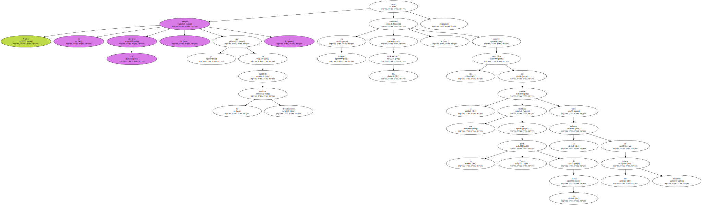Núñez responsabilizó a los medios de comunicación , con la dureza de sus críticas sistemáticas a Van Gaal , de la respuesta negativa que han tenido los socios del Barça , y mantiene su fe en el entrenador , al que cree capaz de remontar la situación adversa y reconducir al equipo hacia la buena dirección.
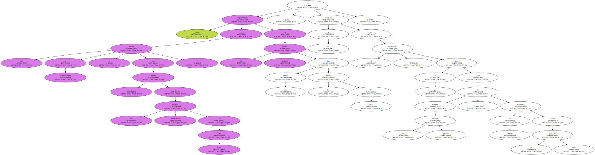" Todavía creo que ganaremos la Liga , estoy convencido " , dijo a este diario en una de sus confesiones , a la vez que argumentó que han sido " las lesiones y la mala suerte en los últimos partidos " las que han provocado esta inesperada crisis.
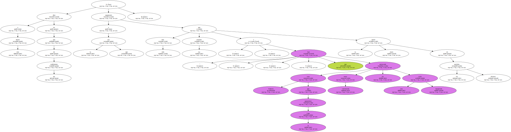El máximo dirigente azulgrana admite la desilusión que ha supuesto la eliminación del equipo en la Liga de Campeones y considera que la afición " tiene el derecho moral de quejarse , pero ni el club ni el presidente pueden perder la calma ".
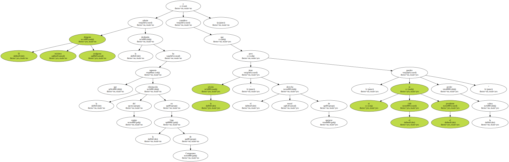En su idea de ratificar permanentemente a Van Gaal , Núñez mira al pasado.
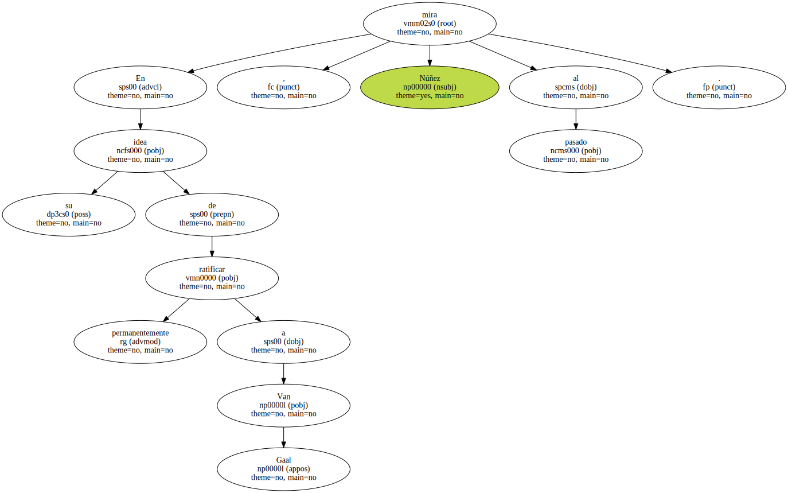Considera que al club no le han beneficiado nunca los cambios de entrenador y que la continuidad y la confianza fueron las claves para que Johan Cruyff pudiera construir un equipo ganador , con el que se conquistó luego la única Copa de Europa que el Barça tiene en sus vitrinas.
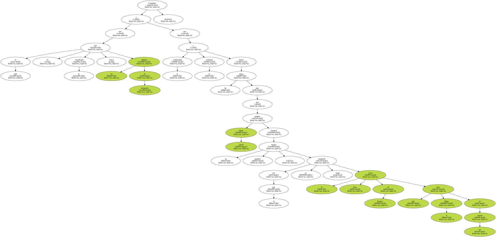Más elogios al técnico.
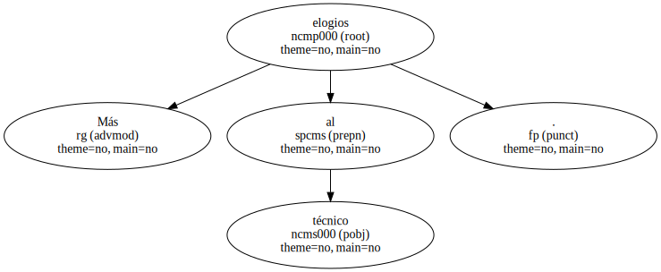Para Núñez , el comportamiento de la prensa ha sido hostil hacia Van Gaal desde el primer día que aterrizó en el Barça , y volvió a tener palabras de elogio para el técnico holandés , al que califica de " trabajador y profesional como pocos ".
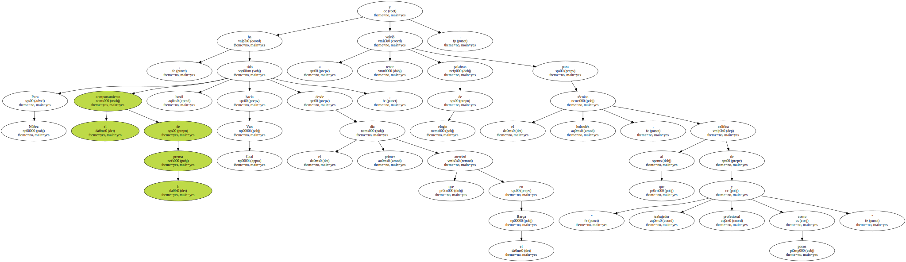El dirigente defendió la apuesta del técnico holandés - - " también se nos censuraría si jugáramos de manera defensiva , como el Mallorca o el Atlético , todos atrás " - - y criticó que se minimizara el gran partido que realizó el Barça ante el Manchester : " Pudimos ganar 6-3 , porque lo merecimos , y entonces la afición hubiera tenido una reacción muy distinta ".
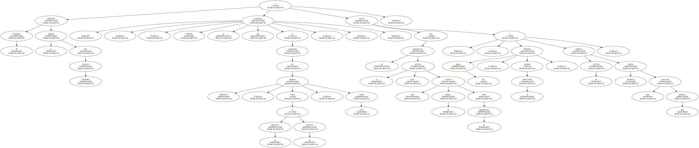Núñez comparte también la teoría del entrenador de que las lesiones han masacrado al equipo ( Bogarde , Guardiola , Nadal , Abelardo , Luis Enrique ) y que el equipo irá a más y mejorará cuando recupere a todos sus jugadores.
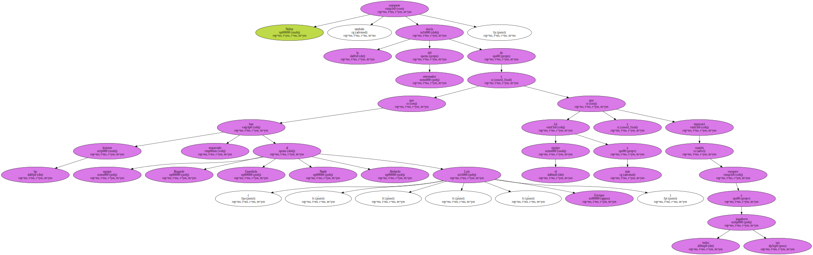Tras el triunfo del Real Madrid ayer en la Copa Intercontinental , Núñez tampoco perdió la serenidad.
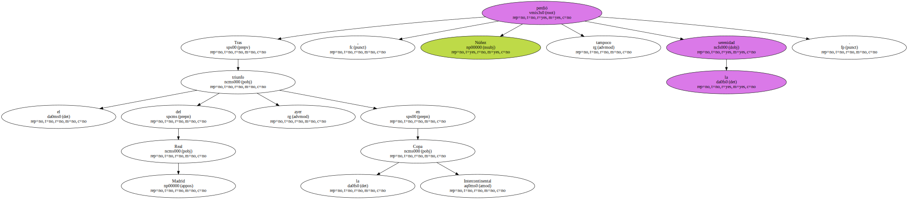Minimizó el triunfo blanco al asegurar que los equipos suramericanos " son más flojos y han bajado de calidad " tras la sentencia Bosman , y recordó el gran equipo que tuvo el Sao Paulo cuando derrotó al Barça de Cruyff en Tokio , en aquella triste final perdida.
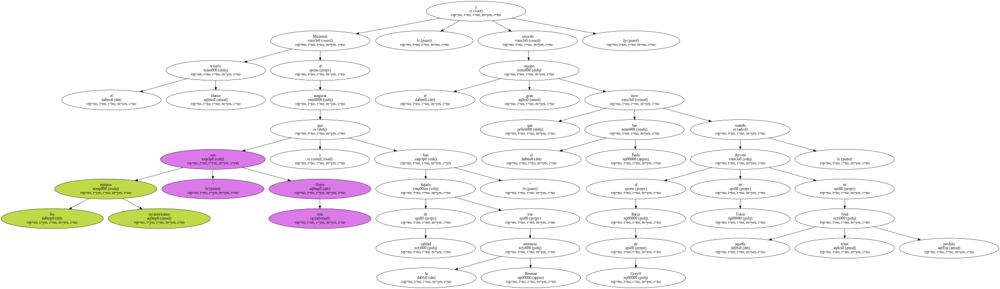Por último , el presidente del Barça , acogió con satisfacción el impulso definitivo que la UEFA dio ayer a la reforma de los torneos europeos : " No todos los clubs piensan lo mismo sobre el reparto de los ingresos , pero se ha escogido un modelo que debe valer para empezar ".
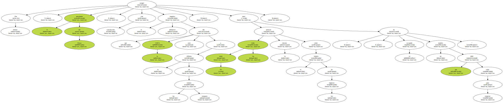" No aceptaríamos que esta nueva Superliga no empezara el año próximo ".
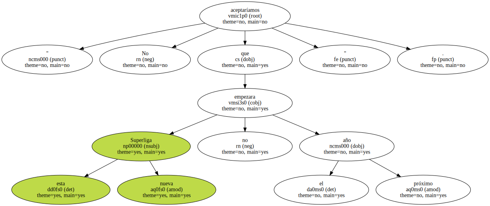